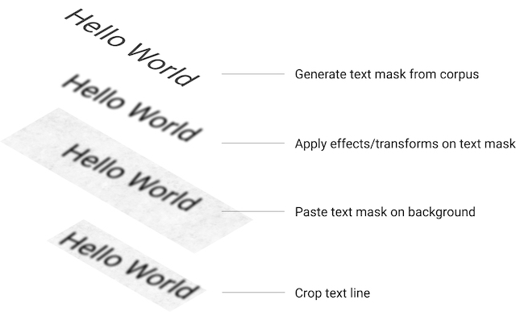

Image rendering process
Single Corpus
Generates text color from background image
Draw text on a transparent image. This step generates a compact text mask image.
Apply corpus_effects on text mask image
Apply PerspectiveTransform on text mask image
Paste text mask image on background
Apply render_effects
Multi Corpus
text_renderer support render multi corpus on image with different font, font size or font color.
Generates text mask images(corpus_effects applied) for multi corpus like in Single Corpus
Apply Layout, generates merged text mask image
Apply PerspectiveTransform on merged text mask image
Apply layout_effect on merged text mask image
Paste merged text mask image on background
Apply render_effects